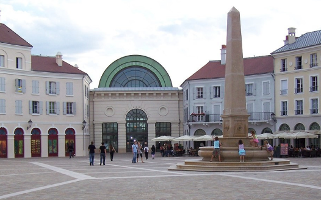
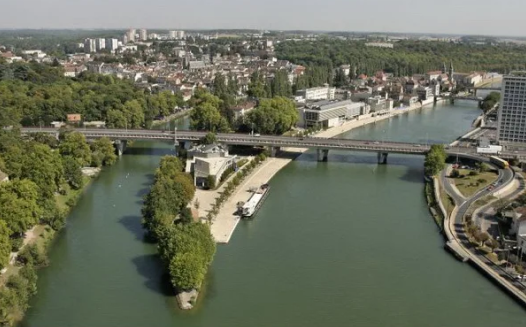
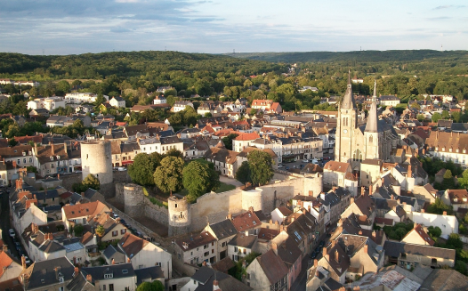

91 / 92 / 94 / 75 / 77
7j/7
24h/24
Demander un devis
91 / 92 / 94 / 75 / 77
7j/7
24h/24
Zones d’interventions
Zones
d’interven-
tions
Chez O'Debouchage, nous sommes fiers de servir un large éventail de clients à travers la région Île-de-France.
Avec une
présence active dans les départements de Paris (75), Val-de-Marne (94), Seine-et-Marne (77), Essonne (91) et
Hauts-de-Seine (92), notre équipe d'experts en débouchage est toujours prête à intervenir, que ce soit pour des
urgences
ou pour des entretiens réguliers.
Paris (75) :
Au Cœur de la Capitale
Dans le tumulte de la vie parisienne, un problème de canalisations peut sembler insurmontable. Que vous résidiez près de la Tour Eiffel ou dans le calme de Montmartre, O'Debouchage répond présent pour assurer que vos canalisations restent aussi fluides que la Seine.
Dans le tumulte de la vie parisienne, un problème de canalisations peut sembler insurmontable. Que vous résidiez près de la Tour Eiffel ou dans le calme de Montmartre, O'Debouchage répond présent pour assurer que vos canalisations restent aussi fluides que la Seine.

Val-de-Marne (94) :
L'Expertise à l'Est
De Vincennes à Vitry-sur-Seine, nos déboucheurs qualifiés connaissent chaque recoin du Val-de-Marne. Nous apportons notre savoir-faire à votre porte, garantissant une intervention rapide et efficace.
De Vincennes à Vitry-sur-Seine, nos déboucheurs qualifiés connaissent chaque recoin du Val-de-Marne. Nous apportons notre savoir-faire à votre porte, garantissant une intervention rapide et efficace.

Seine-et-Marne (77) :
Un Service Étendu
Les vastes espaces de la Seine-et-Marne ne nous font pas peur. De Meaux à Fontainebleau, nous parcourons les kilomètres nécessaires pour venir à bout de vos soucis de canalisations.
Les vastes espaces de la Seine-et-Marne ne nous font pas peur. De Meaux à Fontainebleau, nous parcourons les kilomètres nécessaires pour venir à bout de vos soucis de canalisations.

Essonne (91) :
La Réactivité au Sud
Dans l'Essonne, nos équipes sillonnent le département pour offrir leurs services de débouchage. Nous comprenons l'importance d'une intervention rapide pour les foyers et les entreprises, et nous sommes là pour y répondre.
Dans l'Essonne, nos équipes sillonnent le département pour offrir leurs services de débouchage. Nous comprenons l'importance d'une intervention rapide pour les foyers et les entreprises, et nous sommes là pour y répondre.
Hauts-de-Seine (92) :
La Proximité pour les Hauts Seinais
À Nanterre, Boulogne-Billancourt ou encore Neuilly-sur-Seine, nos déboucheurs d'O'Debouchage sont à quelques encablures pour résoudre vos problèmes de bouchon sans délai.
À Nanterre, Boulogne-Billancourt ou encore Neuilly-sur-Seine, nos déboucheurs d'O'Debouchage sont à quelques encablures pour résoudre vos problèmes de bouchon sans délai.
01 84 80 01 87
Appel Gratuit